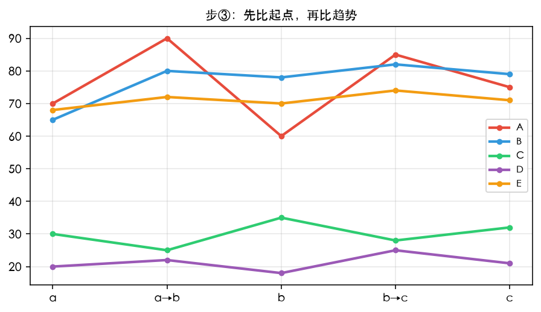

解题三步 · 第三步
数据分析 — 先比起点，再比趋势
例：段内分组
| 较高组 | 较低组 |
|---|---|
| A、B、E | C、D |

步 3：先比起点 (a 年)，再比趋势 (a→b)
以 CD 为例：
- 先比起点： 在 a 年，C = xx，D = xx；
- 再比趋势： a → b，C 升至 xx，D 降至 xx。
批注（红）：
- 若一段内有大于 2 个项目，则段内分组（如 ABE）
- 先升后降单说 → 强调变化形式（如 A）